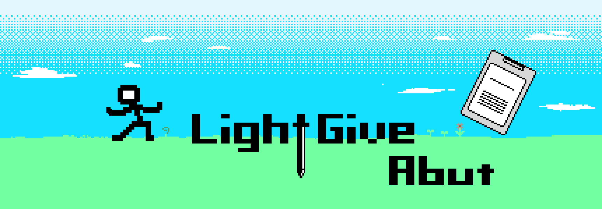

Name
Akase Matsuura (LightGive)
Since
1996.02.08~
Self-introduction
ゲームプログラマーとして活動しています。Unityエンジンを使用し、スマートフォンなどのモバイル向けゲームアプリ開発、VIVEなどのVRゲーム開発が得意です。主にC#の言語を使用したプログラミングが出来ます。Unityでエディタ拡張をしてUnity上で使用できるツール系を作るのも好きです。ツール系等はGitHubに一部公開しています。
普段、ゲームは自分の作りたい物を適当に作ってます。
服やデザインなどはモノトーンが好きです。ゲームも同じく1Bit系のドット製のゲームデザインが好きです。